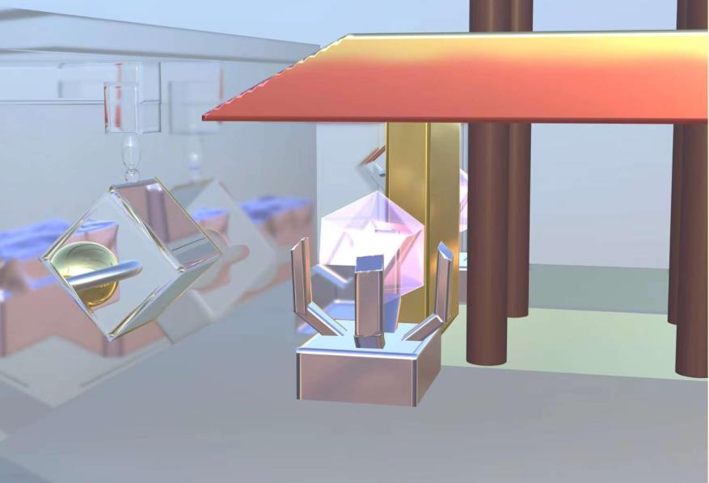
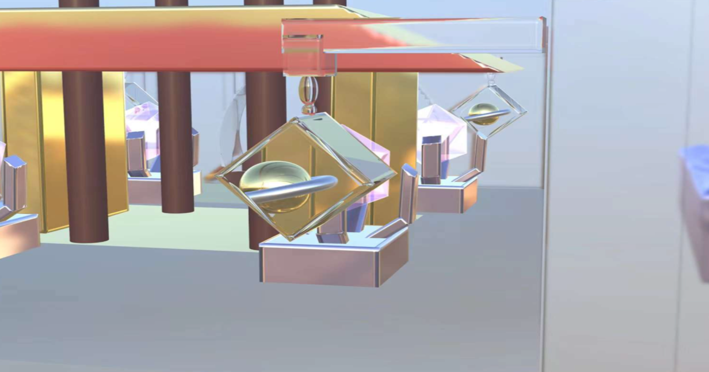
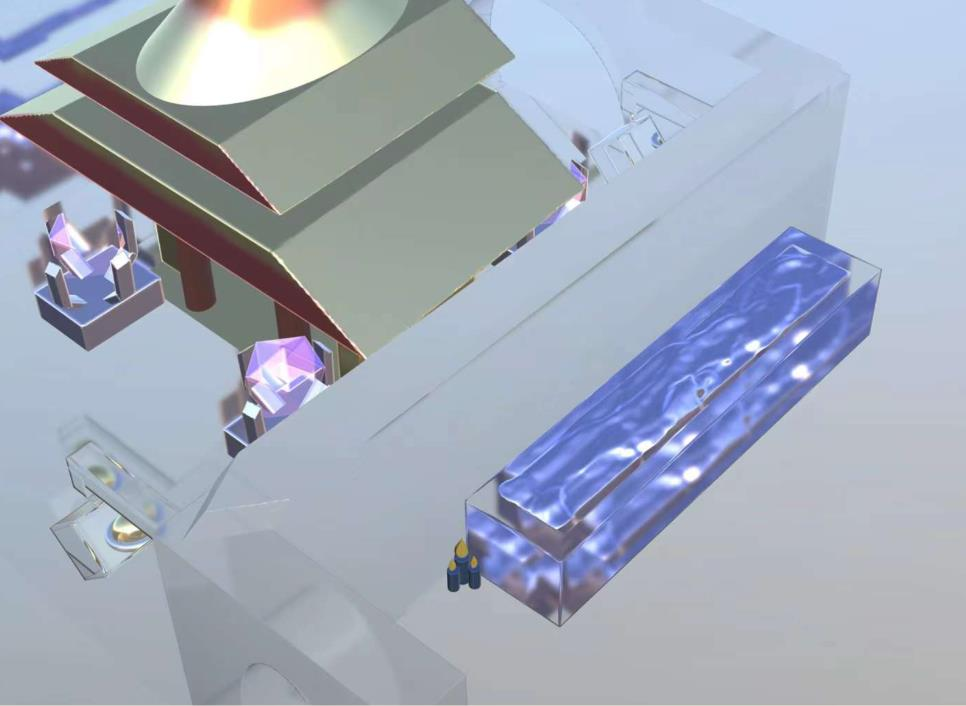

Moon Palace



Description
The moon palace that was inspired by a chinese myth. The myth talks about a fairy from the moon was baninsh to the mortal world and she falls in love with a man, but she found a cloth that can bring her back to the immortal world, so she wears it and fly back to the moon. The idea of the transparent wall is because moon has a very low temperature and those walls are like ice. The latterns on this picture concluded a small planet to give a dreamy feel.